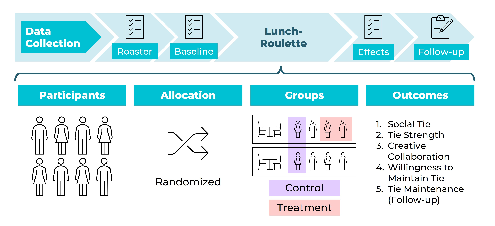

The Question
Innovation rarely emerges in isolation. It flourishes when people with diverse backgrounds and complementary knowledge find each other — but in distributed, multi-organisational environments, such encounters are left largely to chance. Harold Gamero, Prof. Dr. Tim Schweisfurth, and Harini Marudavanan at ODCE set out to ask: can organisations deliberately engineer serendipity? And if so, does it work across the organisational boundaries that typically block collaboration?
The Experiment
The research team designed and ran four rounds of field experiments at a technology park in Hamburg, home to approximately 800 employees across 120 small and medium-sized enterprises. Participants were randomly assigned to tables at free "Lunch-Roulette" sessions — informal meals engineered to bring together employees from different firms who would not otherwise have met.
Data was collected at four points in time: one week before the lunch, two days after, up to three months later (when participants could redeem a follow-up meal voucher with any participant of their choice), and via a qualitative survey eight months post-intervention. In total, 876 dyadic interactions were analysed.

Figure 1: Research design showing the Lunch-Roulette intervention and the five measured outcomes across individual and structural boundaries. Credit: ODCE / TUHH.
The Results
The findings were striking. Participants seated together during a Lunch-Roulette were:
A meta-analysis pooling all five outcomes confirmed that the intervention exerted a strong, homogeneous effect (I² = 0.0%), meaning benefits were consistent and not driven by any single measure.
Key finding: "Participants seated together were more than 21 times as likely to form a new professional connection compared to those seated apart — and these effects held even across industry, geographic, and gender boundaries."
Bridging Organisational Boundaries
The study went further, examining whether the benefits of engineered encounters persisted in the face of common collaboration barriers. The results show a nuanced picture:
| Boundary Type | Barrier effect? | Bridged by Lunch-Roulette? |
|---|---|---|
| Geographic distance | Mild negative (p = .034) | Fully neutralised |
| Industry distance | Strong negative (p < .001) | Fully bridged |
| Network non-redundancy | Strongest barrier (p < .001) | Partially bridged |
| Gender differences | Moderate negative (p = .016) | Largely bridged |
| Functional differences | Moderate negative (p = .039) | Partial relief |
| Hierarchical distance | Weak / non-significant | Resistant |
Eight Months Later
A qualitative follow-up eight months after the intervention confirmed that some relationships had persisted — participants maintained sporadic contact, built trust, and in several cases planned future collaboration. Others cited limited business synergies or organisational changes as obstacles. Notably, many participants highlighted social and psychological benefits: feeling recognised, comfortable, and a sense of belonging — suggesting engineered serendipity builds relational infrastructure even where sustained collaboration requires additional support.
Why It Matters
This research demonstrates that lightweight, low-cost interventions can generate meaningful cross-boundary relationships where traditional structures fail. For managers in knowledge-intensive environments — technology parks, innovation clusters, campuses, and hybrid organisations — the Lunch-Roulette offers a practical, evidence-based tool to build inter-organisational collaboration without heavy coordination costs.
About the Research
This study was conducted by Harold Gamero, Prof. Dr. Tim Schweisfurth, and Harini Marudavanan at the Institut für Organisationsdesign und Collaborative Engineering at Hamburg University of Technology (TUHH). The research draws on field experiments conducted at a technology park in Germany involving 876 dyadic interactions across four experimental runs.